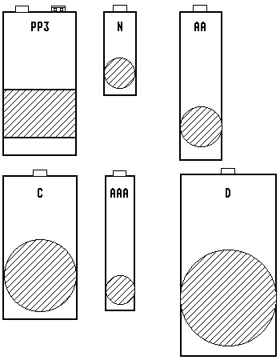

Previous
Next
TOC
Die verschiedenen Batteriegrößen
Die Abbildungen geben nur die ungefähren Größen wieder, da auch die
Batterie- beziehungsweise Akkuabmessungen von Hersteller zu Herstel-
ler variieren. Spezielle Industrieausführungen der Akkus mit ab-
weichenden Kapazitäten sind hier nicht berücksichtigt, da ich auch
schon verkürzte Monozellen gesehen habe die nur halb so lang waren
wie die normalausführung und eine Kapazität von 2Ah bei einer Zel-
lenspannung von 1,2 Volt hatten.
Bezeichnung
N
AM5 MN9100
LR1 LADY
AAA
AM4 MN2400
LR03
MICRO
AA
AM3 MN1500
LR6 MIGNON
C
AM2 MN1400
LR14
BABY
D
AM1 MN1300
LR20
MONO
PP3
6AM6
MN1604
6LR61
E-BLOCK (9V)

Kapitel Die verschiedenen Batteriegrößen, Seite 1